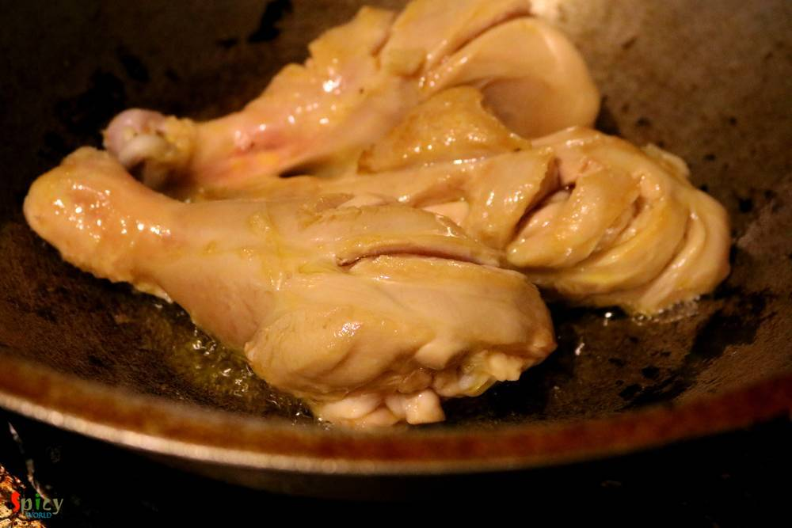
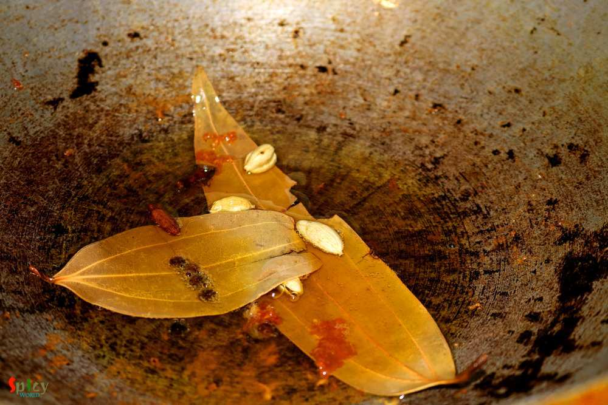
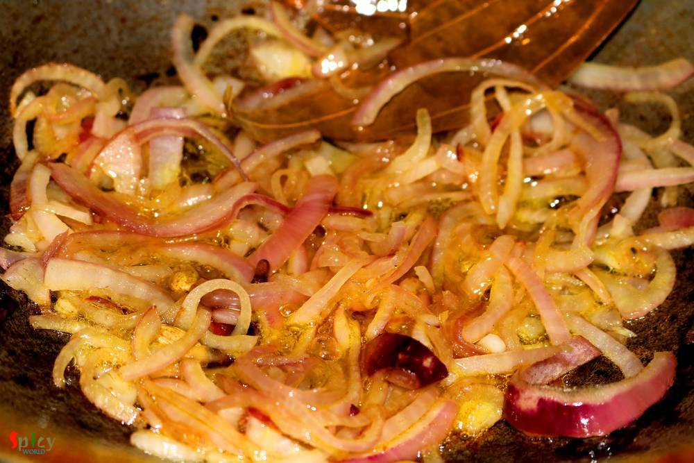
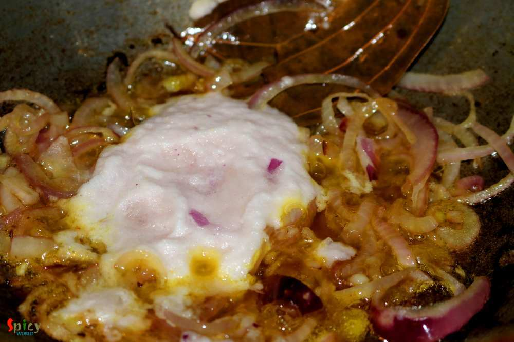
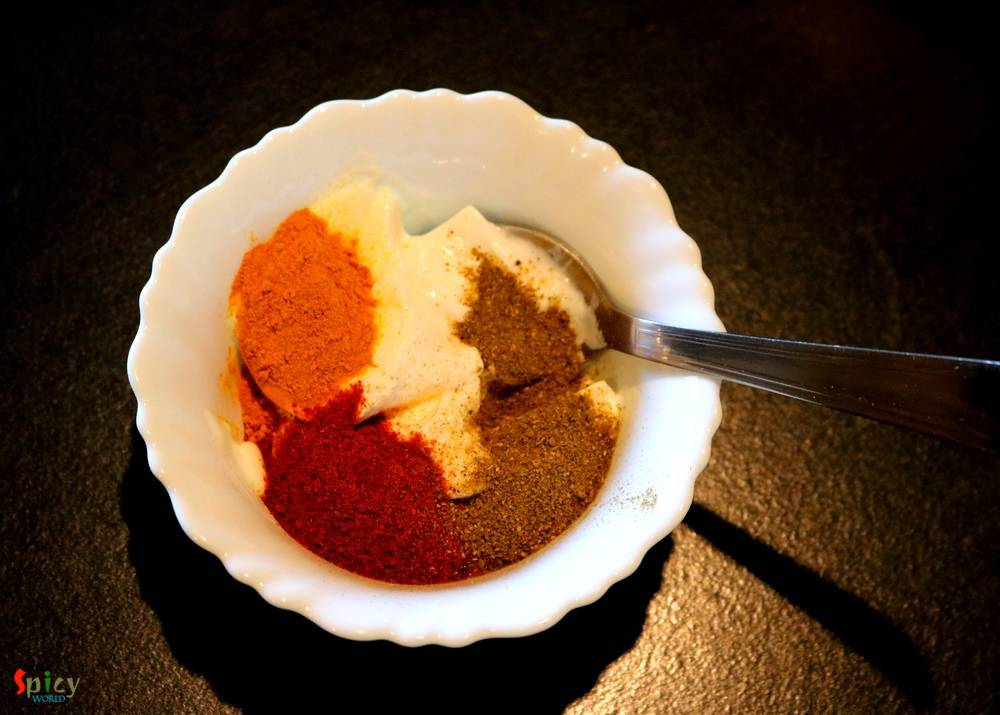
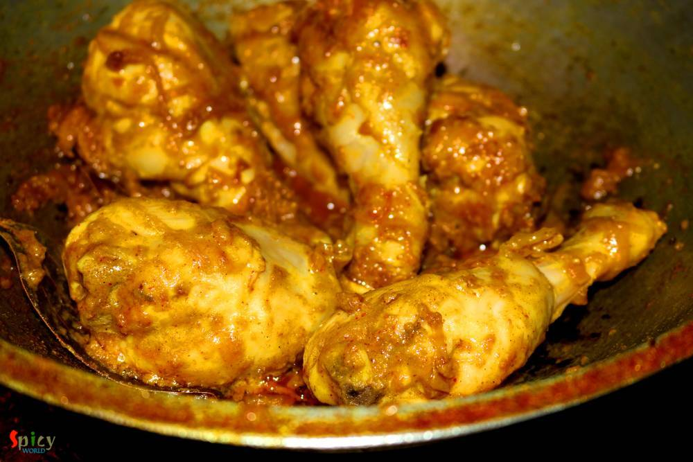
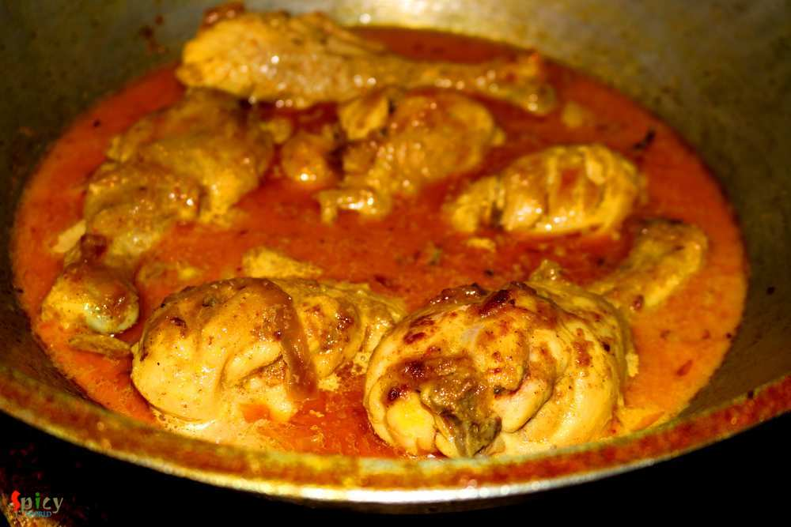
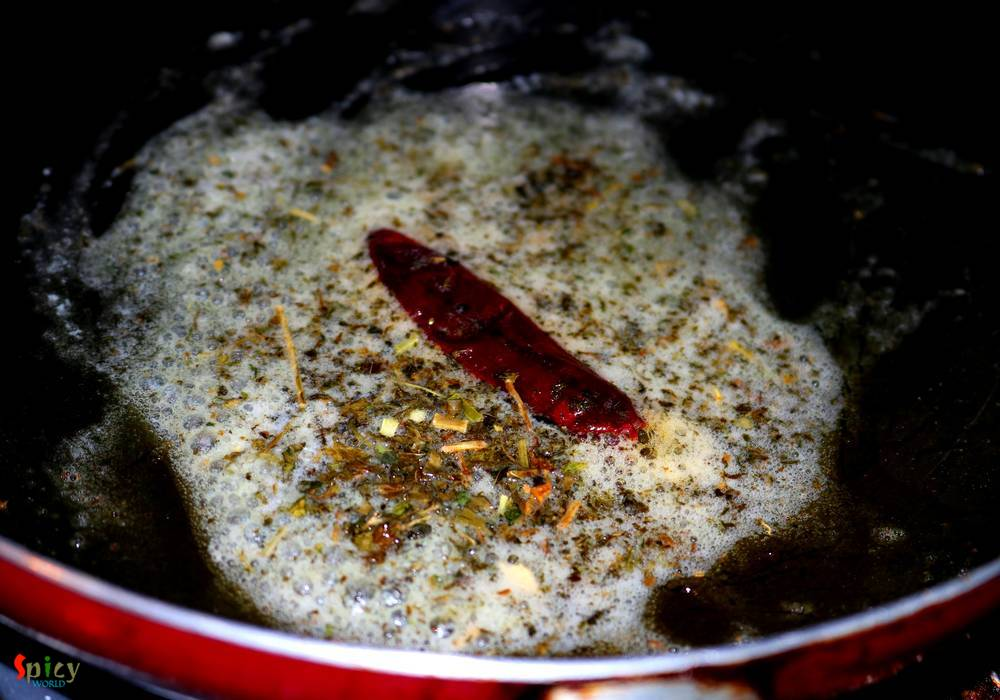

Simple and Easy Recipes
Dhaba style Chicken Curry
© 2016 Spicy World, Published on: Sep 20, 2016
I know it's been two weeks I didn't post anything due to settling down in India, but heyy now I am back with another interesting recipe from 'dhaba' gharana. Every place has their own style of dhaba / road side food joints. Whenever we plan any short trip within Bengal, we try to make the lunch stop at some popular Dhaba. Their 'torka-ruti' and 'chicken curry' with rice are must for us. I like their chicken curry on little bit of thicker side, whereas the thin curry also tastes awesome. I made this delicious dish last month and we both enjoyed it with chapatis. Do try this easy recipe in your kitchen and let me know how it turned out for you.

Ingredients
- 1 kilo medium size chicken pieces with bone.
- 1 big onion, thinly sliced.
- 2 Teaspoons of ginger and garlic paste.
- 4 Tablespoons of onion paste.
- 3 Tablespoons of curd / yogurt.
- Spice powder (1 Teaspoon of turmeric powder, 2 Teaspoons of hot red chilli powder, 2 Teaspoons of kashmiri red chilli powder, pinch of mace and nutmeg powder, 1 Teaspoon of garam masala powder).
- Salt and sugar.
- Warm water.
- Whole spices (2 by leaves, 3 green cardamom, 4 cloves).
- 4 Tablespoons of mustard oil.
- 3 Tablespoons of milk.
- 1 Teaspoon of kasuri methi / dry fenugreek leaves.
- 1 Tablespoon of butter.
- 1 Teaspoon of chopped garlic.
- 1 dry red chilli.


Steps
Heat the oil in a pan or kadai.
Fry the chicken pieces very lightly (approx 5 minutes) in hot oil and then keep them aside.
In the same oil saute the whole spices for a minute.
Add the sliced onion and fry them until golden in color.
then add the onion paste, ginger and garlic paste with pinch of salt. cook until the oil starts separating.
Mix all of the spice powder with the yogurt very well and add in the pan. Cook on medium flame for 7 minutes.
Now add the fried chicken pieces. Cook for 15 minutes on medium flame with the gravy.
Then add the milk, some salt and pinch of sugar. Cook until the chicken becomes soft.
Lastly add a Teaspoon of ketchup. Mix well.

For tempering, heat the butter in a small pan. Add the chopped garlic, dry red chilli and kasuri methi. Saute for few minutes and pour it over the cooked chicken curry.
If you want smokey flavour in this dish, then place a steel bowl upon the curry, put a hot charcoal and drizzle few drops of oil and immediately cover the bowl. Let the smoke settle down for 3 minutes then serve.
Your dhaba style chicken curry is ready ...
Serve this hot with plain chapati or paratha ...
")